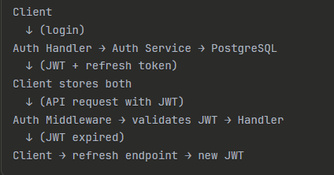

Building a Production-Ready Authentication System in Go: Lessons from the Trenches
 Source Code
Source Code
Introduction
I spent the last few weeks building an authentication system from scratch in Go. Not because I enjoy reinventing wheels, but because I needed to deeply understand the security model for a side project—and honestly, most auth libraries felt like black boxes I didn't fully trust.
The Problem
I was building an API that needed user authentication, and I had two choices: integrate a third-party service like Auth0, or build it myself. The third-party route would've been faster, but I was concerned about vendor lock-in and monthly costs scaling with users. More importantly, I wanted complete control over the security model and session management. The requirements were straightforward: secure user registration and login, token-based authentication for a React frontend, and protection against common attacks. Nothing exotic, but it had to be production-ready.What I Got Wrong Initially
My first instinct was to use simple session cookies. Store a session ID, look it up in the database on every request—done. But as I sketched out the architecture, I realized this wouldn't work well for a mobile app I planned to add later. Cookies are a browser thing. I also initially underestimated how much security infrastructure I'd need beyond just "hash the passwords." Rate limiting, account lockouts, timing attack protection—these weren't nice-to-haves, they were essential.The Architecture I Landed On
I went with a JWT access token + refresh token pattern:
Access tokens live for 15 minutes. Refresh tokens last 7 days and are stored in the database with session metadata. This gave me the stateless benefits of JWT for most requests, while keeping the ability to revoke sessions through the refresh token. The service layer handles all business logic—password hashing, token generation, validation. Handlers just translate HTTP requests into service calls. This separation made testing significantly easier.Key Decisions and Trade-offs
Argon2id over bcrypt: I chose Argon2id for password hashing because it's memory-hard, which makes GPU-based cracking attacks much more expensive. Bcrypt is still fine, but Argon2id is the current recommendation from security researchers. The trade-off is slightly higher CPU usage per hash, but we're talking milliseconds. Database-backed refresh tokens: I could've made refresh tokens pure JWTs too, but storing them in PostgreSQL gave me proper revocation. When a user logs out, I can delete the session. With pure JWTs, you'd need a blocklist in Redis or accept that tokens can't be truly revoked until they expire. 15-minute access token TTL: This was a balancing act. Shorter would be more secure but hammer the refresh endpoint. Longer would reduce API calls but increase exposure if a token leaks. 15 minutes felt right for a moderate-security application. Banking apps would go shorter.Challenges I Hit
Rate limiting per user vs per IP: My initial rate limiter only tracked IPs, which worked until I realized multiple users behind a corporate NAT would share limits. I ended up implementing per-route rate limiting instead—stricter limits on /login and /register, looser limits on token refresh. Constant-time comparison: I wrote a naive password comparison at first—just checking if the hashes matched with ==. A colleague pointed out this was vulnerable to timing attacks. Switched to subtle.ConstantTimeCompare(). These kinds of security subtleties are why auth is tricky. Login attempt tracking: I wanted to lock accounts after 5 failed attempts, but realized I needed to track this in the database, not in memory. A server restart would reset the counter. Also had to decide: lock by email or by IP? I chose email to prevent an attacker from locking out legitimate users by spamming their email from different IPs.What I'd Do Differently
If I rebuilt this today, I'd add Redis for token blacklisting from day one. Right now, revoking all sessions for a user requires deleting database rows. With Redis, I could maintain a blacklist of revoked token IDs that gets checked on every request—faster and more flexible. I'd also implement proper migrations from the start instead of manually running SQL. I used raw SQL CREATE statements, which worked fine for a solo project but would be painful in a team setting. The email verification system is still on my TODO list. I designed the schema for it (email_verified column) but haven't implemented the sending logic. This is fine for prototyping but would be essential for production.Lessons Learned
Security is layers, not a single check: Every layer—password hashing, rate limiting, account lockouts, constant-time comparisons—catches different attack vectors. Skip one and you've left a door open. Testability comes from architecture: Separating the service layer from HTTP handlers made it trivial to write unit tests. I could test all the auth logic without spinning up an HTTP server. Config should be explicit: I hardcoded some values (token TTLs, lockout duration) in a Config struct. This made it easy to see all the security parameters in one place and adjust them based on the application's needs.Who Should Use This
This approach works well for:- APIs serving web and mobile clients
- Applications where you need full control over the auth flow
- Teams that want to understand their security model deeply
- You need OAuth/SAML enterprise integrations (use Auth0)
- You're building something quick and auth isn't core to the product
- You don't have time to stay current with security best practices